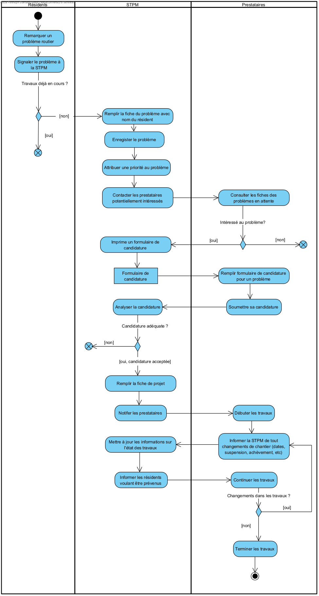
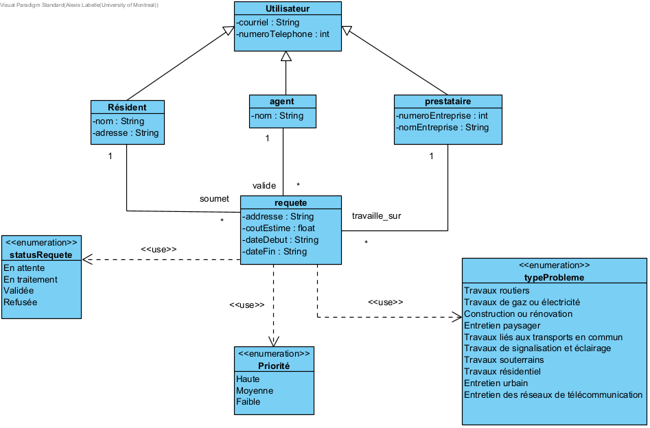
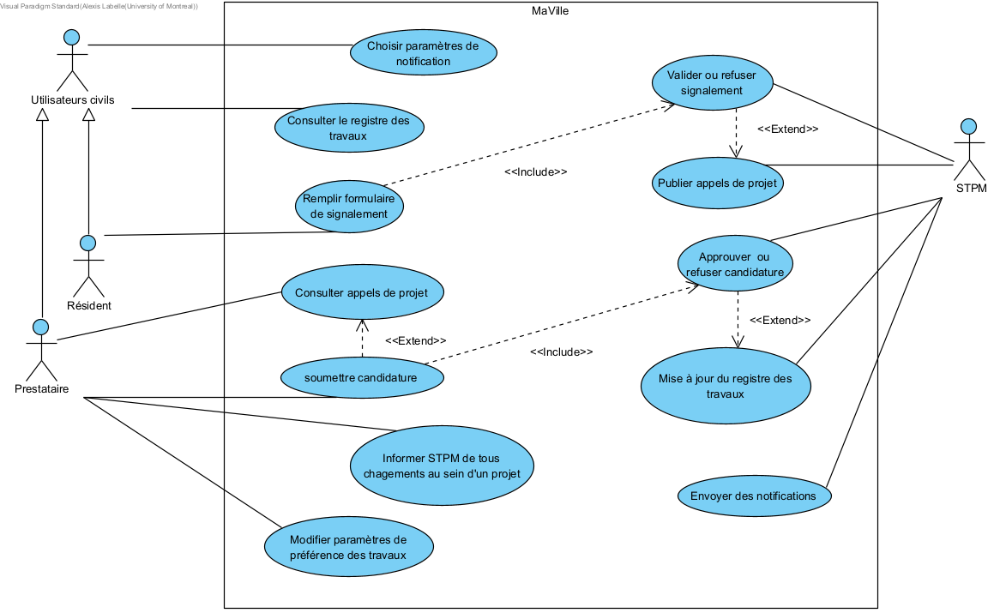
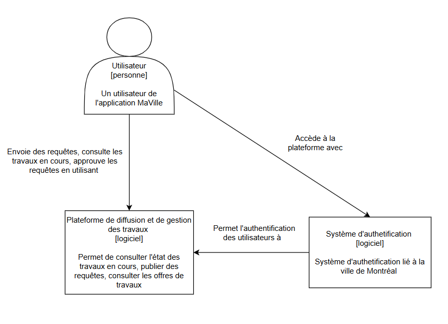
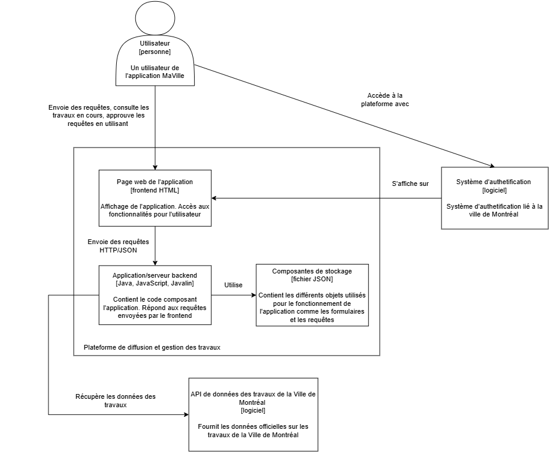
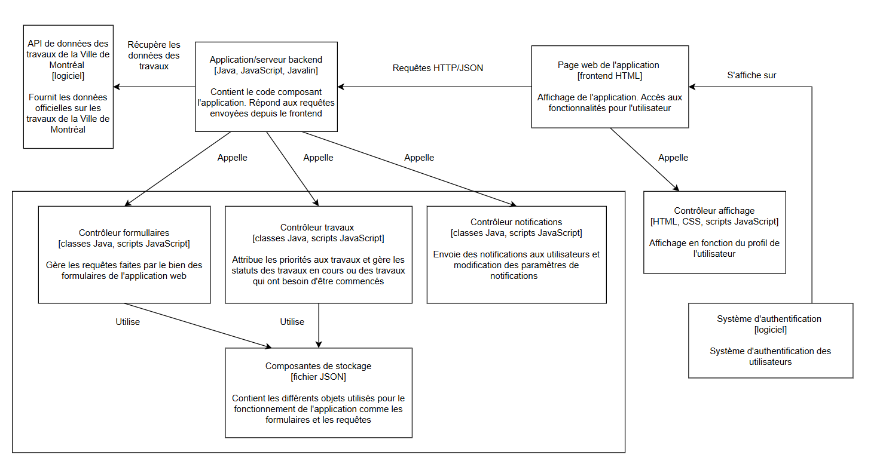
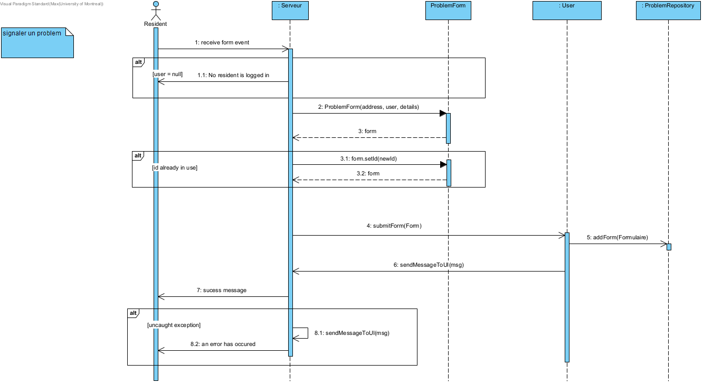
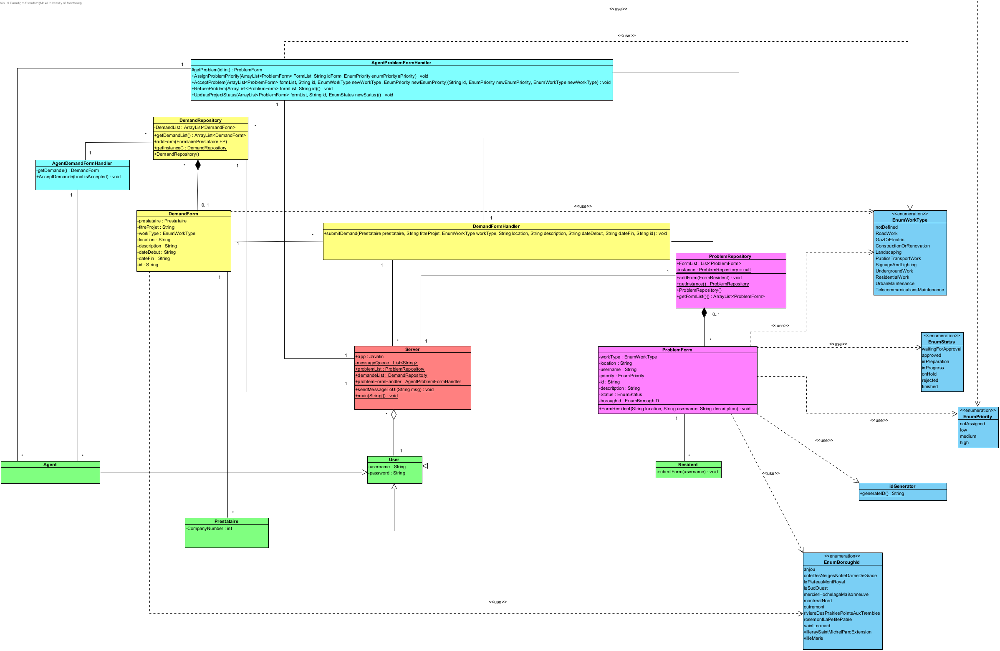

Rapport de project - MaVille
Description
Contexte
Le Service des Travaux Publics de Montréal (STPM) souhaite développer une application pour permettre aux résidents de vérifier si un problème n'est pas déjà en cours de traitement ou signaler des problèmes urbains (trous, lampadaires défectueux, graffitis, etc.). Cette application devrait aussi permettre aux prestataires de proposer/choisir des projets pour les résoudre.
Problèmes à résoudre
- Manque de communication entre les acteurs.
- Absence de notifications claires et en temps réel.
- Processus manuel et innéficace (appels téléphoniques, fichiers Excel, documents imprimés, etc..)
Propositions
Création d'une application simple et interactive centralisant les informations pour la gestion des problèmes et projets de travaux, incluant un registre consultable et un système de notification.
Hypothèses
- L’authentification de compte des usagers est gérée par le service central de la ville de Montréal
- Les notifications sont envoyées automatiquement aux résidents et prestataires.
- Les prestataires doivent être enregistrés et validés par le STPM.
Équipe
Étudiants, Matricule, Discord ID, GitHub ID :
Max Gour, 20299796, el.max.gg, MaxGour
Alexis Labelle, 20276112, aleksy_, Al3ksy
Philippe Lefrançois-Racz, 20259825, philippusRachidien, Adealeus
Damia Boudjema, 20299430, Chrisamy, Chrisamy
Organisation
Les communications des membres de l'équipe se font sur principalement sur Discord et parfois en présentiel. Le travail est partagé via GitHub avec un workflow simple. La communication est journalière en clavardage Discord et appels conférences pour les mises au point.
Modélisation du domaine
Glossaire
- STPM: Service des Travaux Publics de Montréal. Organisation ayant comme objectif de résourdre les problèmes d'ordre public de la ville de Montréal.
- Prestataire: Une entreprise qui prend en charge un problème assigné par le STPM. Le prestataire s'occupe du chantier et du bon déroulement des travaux.
- Utilisateur: Personne qui utilise l'application MaVille, souvent un résident ou un prestataire.
- Appels de projet: Appel fait par la STPM qui indique qu'un problème est prêt à être résolu et qu'un chantier est prêt à être établi. Cet appel sert à recruter un prestataire pour entamer des travaux.
- Budget: Somme d'argent investie dans la résolution d'un problème. Ce montant doit être respecté le plus possible.
- Candidature: Requête envoyée par les prestataires pour proposer leurs services au STPM. Le STPM prend compte des différentes candidatures pour un problème particulier et choisi le meilleur candidat pour commencer les travaux.
- Priorité: Degré d'importance attribué aux différents problèmes signalés par les résidents. Plus la priorité est haute, plus les travaux seront entamés rapidement.
Diagramme d'activités
Diagramme de classes
Modélisation des exigences
Besoins non-fonctionnels
- Application bilingue (français et anglais).
- Accessible depuis mobile et desktop.
- Temps de réponse inférieur à deux secondes.
- Données sécurisées via HTTPS.
- Disponibilité minimale de 99%.
- Interface simple et intuitif.
Besoins fonctionnels
Diagramme de cas d'utilisation
Résumé des cas d’utilisation
| Cas d’utilisation | Acteur principal | Description rapide |
|---|---|---|
| Choisir paramètres de notification | Utilisateur civil | L’utilisateur configure ses préférences de notification. |
| Consulter registre des travaux | Utilisateur civil | L’utilisateur consulte la liste des problèmes signalés et leur état (en cours, résolu, etc.). |
| Remplir formulaire de signalement | Résident | Le résident remplit un formulaire pour déclarer un problème urbain (trou, lampadaire, graffiti, etc...). |
| Valider et publier appels de projet | STPM | L’agent du STPM examine un signalement et le valide, puis publie un appel de projet. |
| Consulter appels de projet | Prestataire | Le prestataire accède à la liste des problèmes ouverts pour proposer une solution. |
| Soumettre candidature | Prestataire | Le prestataire soumet un projet avec détails (coût, délai, ressources). |
| Approuver candidature | STPM | Le STPM approuve ou rejette une candidature en fonction des critères. |
| Informer STPM des changements | Prestataire | Le prestataire signale toute modification liée à l’avancement d’un projet. |
| Mise à jour du registre des travaux | STPM | Le registre est automatiquement mis à jour après validation ou changement (travaux complétés, en cours, etc.). | Choisir paramètres de préférence des travaux | Prestataire | Le prestatiare configure ses préférences de travaux. | Envoyer des notifications | STPM | Envoie des notifications aux utilisateurs civils en fonction de leurs paramètres de notifications. |
Cas d’utilisation : Signaler un problème
Résumé : Le résident signale un problème dans l’application MaVille à l'aide du menu fourni.
Une fois que le formulaire est rempli,
le problème est transmis au STPM en attente de validation.
Acteur principal : Résident
Relations : inclus Remplir un formulaire.
Pré-conditions :
- Le résident possède un compte valide.
- Le résident est connecté à Internet.
- Le problème à signaler fait parti des choix dans le menu.
Post-conditions :
- Le signalement est envoyé au serveur.
- Si le signalement est valide, le problème est formaté en tant qu'appel à projet et est publié.
- Les prestataires concernés sont notifiés.
Règles fonctionnelles :
- Le problème signalé ne doit pas être déjà présent dans le registre des travaux.
- L’adresse doit être valide et située à Montréal.
Exigences non-fonctionnelles :
- Le résident est informé via un pop-up de confirmation.
- Le problème est affiché dans l’onglet des signalements.
Scénario nominal :
- Le résident se connecte dans son compte.
- Le système vérifie les identifiants.
- Le résident remplit le formulaire (adresse, type de problème).
- Le résident soumet le formulaire.
- Le système vérifie les informations.
- Le système enregistre le problème dans la liste.
Scénarios alternatifs / exceptionnels :
- 2a. Informations invalides : le système propose de créer un nouveau compte.
- 5a. Erreur de requête : le système renvoie un message d’erreur.
- 5b. Problème déjà existant : message d’avertissement envoyé.
Prototype
L’application permet de choisir un profil (résident, prestataire, Agent), puis d’afficher un menu adapté à chaque cas.
Dans la vue resident le resident est capable de voir la liste des problems de l'api. Et est capable de signaler des problemes
Le prestataire est capable de soumettre une demande de travail sur un projet.
L'agent est capable de voir les demandes soumis par le resident et est capable d'assigner une priorité
Style d'architecture: Client Serveur
Le style d'architecture choisie pour l'application est une architecture client-serveur. Nous avons choisi cette architecture puisque ceci permet un niveau d'abstraction entre le client et le fonctionnement de l'application. De plus on a commencer avec cette architecture puisque elle va etre plus facile et rapide a implementer a ce stade. De plus on pourras ensuite. De plus la gestions des données est plus simple puisque elles sont tous stoquée dans le serveur.
Lorsqu'on a conceptualiser le serveur on voulais que l'utilisateur de l'application communique seulement avec le serveur et que le serveur s'occupe a offload les interactions a d'autre modules de code. Les modules de codes sont regrouper par le role qu'ils jouent, c'est a dire si c'est liée a un prestataire, agent, resident. Une chose notable est l'implementation du design pattern de singleton pour nos deux repertoires. on a utiliser ceci afin de s'assurer qu'il existe un seule repertoire et que les problemes ne sont pas desorganiser dans de divers instance des repertoires
Résumé du fonctionnemment de l'application
L'Utilisateur intéragit avec l'interface utilisateur de l'application web servant de client pour soumettre des requêtes au serveur. Le serveur traite la requête et retourne la réponse correspondante. L'interface utilisateur affiche ensuite la réponse du serveur.
Modèle C4 de niveau 1
Modèle C4 de niveau 2
Modèle C4 de niveau 3
Diagramme de Sequence
Diagramme de Classes Object orientée
Le code couleur est: les classes en Rose sont associee au Resident, ceux en jaune au prestataire, et ceux en bleu pale(cyan) au agents